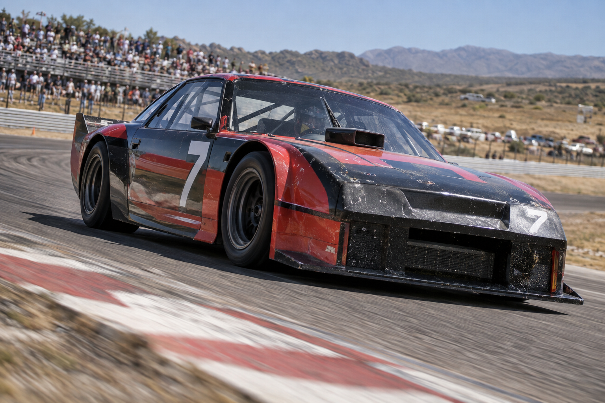

Títulos
Juan Gálvez, el máximo campeón.
Automovilismo nacional
Quince fechas, una Copa de Oro y cinco marcas. El calendario, el campeonato y ochenta y nueve temporadas de archivo.

Juan Gálvez, el máximo campeón.
Oscar Gálvez, récord absoluto.
La pelea que atraviesa la historia.
La primera carrera, en 1937, unió Buenos Aires con Santa Fe y volvió por Rosario: casi 1.000 kilómetros.